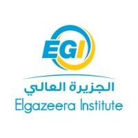
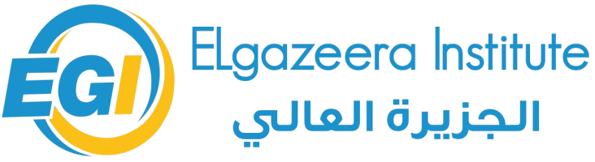

شهد مجال الإعلام والاتصال في السنوات الأخيرة تغيرات كبيرة بعد الثورة الرقمية وانتشار وسائل الاتصال الحديثة، مما اثر في طريقة عمل وسائل الإعلام وفي تعامل الجمهور مع الرسائل الإعلامية.
لذلك يتناول هذا البحث أهم الاتجاهات الحديثة في دراسة علم الإعلام، مثل الرقمنة والذكاء الاصطناعي والإعلام التشاركي وصحافة البيانات.
يسعى البحث إلى الإجابة عن تساؤل رئيس هو: ما أبرز الاتجاهات الحديثة في دراسة علم الإعلام؟ وما عوامل ظهورها؟ وما تحديات الدراسات الإعلامية الحديثة؟
تأتي أهمية البحث من أهمية الاتجاهات الحديثة في علم الإعلام، ودورها في فهم التطورات التي يشهدها المجال الإعلامي في الوقت الحالي، كما تفيد دراسته الطلبة والباحثين والعاملين في هذا المجال.
يسعى البحث إلى التعرف على مفهوم علم الإعلام ونشأته وتطوره، والتعريف بأبرز الاتجاهات الحديثة في دراسته، وبيان عوامل ظهورها، وإبراز التحديات التي تواجه الدراسات الإعلامية الحديثة.
اعتمد البحث على المنهج الوصفي التحليلي، حيث يقوم على وصف الظاهرة محل الدراسة وتحليل مكوناتها وجمع المعلومات عنها من المصادر المختلفة، ثم تفسيرها للوصول الى نتائج تجيب عن تساؤلات البحث.
اختلفت تعريفات علم الإعلام من باحث إلى آخر بحسب وجهة نظر كل باحث وطريقة تناوله للموضوع، ويمكن تعريفه بأنه الفرع العلمي الذي يدرس عملية الاتصال الجماهيري بعناصرها من مرسل ورسالة وقناة وجمهور، ويدرس الاثار المترتبة على استخدام وسائله، حتى أصبح علماً قائماً بذاته له مفاهيمه ومناهجه الخاصة في البحث.
ارتبطت نشأة علم الإعلام وتطوره بالتقدم التقني الذي شهدته وسائل الاتصال؛ فقد بدأت بالصحافة المكتوبة، ثم ظهر التلغراف والتليفون، وبعد ذلك جاء الراديو والتلفزيون، وبعد الحرب العالمية الثانية بدأ الاهتمام بالدراسة العلمية لآثار الإعلام، ومع انتشار الإنترنت في التسعينيات تغير شكل المؤسسات الإعلامية وأساليب عملها بشكل كبير.
يقصد بالاتجاهات الحديثة التوجهات الجديدة التي دخلت مجال الإعلام نتيجة الثورة المعلوماتية، ومن أهم عوامل ظهورها التطور الكبير في تقنيات الاتصال، وانتشار الإنترنت والأجهزة الذكية، وتحول الجمهور من متلقٍ سلبي إلى مشارك فاعل، إضافة إلى التنافس الشديد بين المؤسسات الإعلامية.
تعد الرقمنة والإعلام الرقمي من أهم الاتجاهات الحديثة، حيث انتقلت المؤسسات الإعلامية إلى المواقع والمنصات الرقمية، فظهرت الصحف الإلكترونية، وأصبح الجمهور يختار ما يشاهده ومتى يشاهده.
أصبح الذكاء الاصطناعي يستخدم بشكل كبير في الإعلام، فيظهر في إعداد الأخبار الآلية وتحليل البيانات والترجمة والتحقق من الصور والفيديوهات، ومن أشهر تطبيقاته الروبوتات المحادثه.
أصبحت منصات التواصل مثل فيسبوك ويوتيوب وإكس بيئات يشارك الجمهور فيها في إنتاج المحتوى ونشره، فتحول الاتصال إلى نموذج شبكي متعدد المصادر.
يقوم على مشاركة الأفراد العاديين في نقل الأحداث بأدوات بسيطة مثل الهاتف المحمول، وقد ساعدت في نقل أحداث قد لا تصل إليها المؤسسات الكبرى، لكنها أثارت أسئلة حول دقة المعلومات والتحقق منها.
تعتمد على جمع البيانات الكبيرة وتحليلها بأساليب إحصائية، ثم تحويل النتائج إلى قصص سهلة الفهم تُعرض بالرسوم البيانية، وقد أصبحت من الاتجاهات المهمة في الصحافة الحديثة.
أصبح الواقع الافتراضي والمعزز من التقنيات المستخدمة في الإعلام، حيث تنقل الجمهور إلى داخل الحدث فيشعر بأنه حاضر فيه، وتساعد على دراسة أثرها في الإقناع والتعلم والمتعة.
أدت الاتجاهات الحديثة إلى ظهور مجموعة من التحديات التي أصبحت محل اهتمام الباحثين، من أبرزها انتشار الأخبار الزائفة وصعوبة التحقق من صحة المعلومات، والقضايا الأخلاقية المتصلة باستخدام الذكاء الاصطناعي وخصوصية البيانات، وإمكانية التلاعب في الراي العام، إضافة إلى الفجوة الرقمية بين المجتمعات.
وتحتاج هذه التحولات إلى مجموعة من المتطلبات، في مقدمتها تحديث المناهج الدراسية في كليات ومعاهد الإعلام باستمرار، وتدريب الطلبة والباحثين على أدوات البحث الرقمي وتحليل البيانات، وتشجيع البحوث الميدانية عن الظواهر الجديدة في البيئة العربية، والتعاون بين المؤسسات الأكاديمية والمؤسسات الإعلامية.
تناول البحث أهم الاتجاهات الحديثة في دراسة علم الإعلام، وما نتج عنها من تغيير في طريقة العمل الاعلامي وأساليب البحث فيه، وفيما يلي أهم النتائج التي توصل إليها البحث مع أبرز التوصيات.
وقد خلص البحث إلى أن علم الإعلام أصبح علماً مستقلاً توسعت دائرته من الوسائل التقليدية إلى الوسائط الرقمية، وأن الرقمنة والذكاء الاصطناعي من أكثر الاتجاهات تأثيراً في المؤسسة الإعلامية، وأن الجمهور تحول من متلقٍ سلبي إلى مشارك فاعل، في حين تواجه الدراسات الإعلامية تحديات أبرزها الأخبار الزائفة والقضايا الأخلاقية والفجوة الرقمية.
ويوصي البحث بتحديث المناهج الدراسية في كليات ومعاهد الإعلام، وتدريب طلبة الإعلام على المهارات الرقمية واساليب التحقق من الأخبار، ووضع ضوابط أخلاقية لاستخدام الذكاء الاصطناعي، وتعزيز الوعي الإعلامي لدى الجمهور.
1. جلبي، نجم عبود (1984). النظرية في علم الاتصال. بيروت: دار النهضة العربية.
2. كشيش، محمد (1985). مدخل إلى الإعلام والاتصال. بيروت: مؤسسة حسن عاصم الحداد للصحافة والطباعة والنشر.
3. إمام، إبراهيم (2000). الإعلام والاتصال: مفاهيم ومصطلحات. القاهرة: عالم الكتب.
4. مكاوي، حسن عماد (2004). الإعلام الرقمي والإنترنت. القاهرة: دار الفكر العربي.
5. سلامة، سعيد (2008). الإعلام الجديد. عمّان: دار المناهجية للنشر والتوزيع.
6. عاشور، رجاء عبد الله (2015). الإعلام الرقمي. القاهرة: عالم الكتب.